甘脲的介绍
甘脲，系统命名2,4,6,8-四氮杂双环-3,7辛二酮。是一种长效化肥和织物，纸张防湿剂。甘脲的衍生物很多，达上百种，其硝基化合物可作高能炸药，其典型代表为二硝基甘脲、四硝基甘脲以及其水解产物四硝胺基乙烷。
甘脲的合成路线&反应原理
甘脲合成由乙二醛与尿素经过加成、缩合形成甘脲。
第一步1分子乙二醛与1分子的尿素加成，生成中间体4,5-二羟基咪唑烷酮，第二步再与1分子尿素缩合，环化成甘脲。
实验部分
[!Warning]
浓硫酸有强腐蚀性
所需试剂和仪器
试剂
- 乙二醛（40％aq.）AR分析纯
- 浓硫酸（≥98％）AR 分析纯
- 无水乙醇（≥99.7％）AR 分析纯
- 脲（≥99.0）AR 分析纯
- 氢氧化钠
仪器
- 电子天平（500g0.1g）
- 烧杯500ml，250ml
- 量筒100ml，50ml
- 三角烧杯250ml
- 标准口四口烧瓶 500ml（24#X4）
- 蛇形冷凝管250mm（24*2）
- 抽滤一套
- 烧瓶夹
- 铁架台
- 空心玻璃塞
- 四氟聚乙烯塞
- 恒压滴液漏斗250ml
- JJ-1电动搅拌器（60W）
- 恒温水浴锅
步骤
- 称取36g
脲。
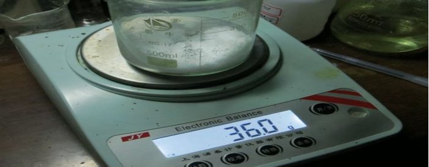 - 量取40ml水加入
脲中，溶解。
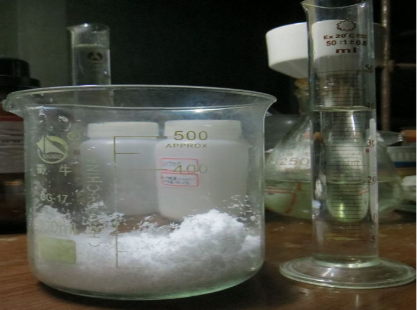 - 用
浓硫酸调节pH至1.0-2.0。
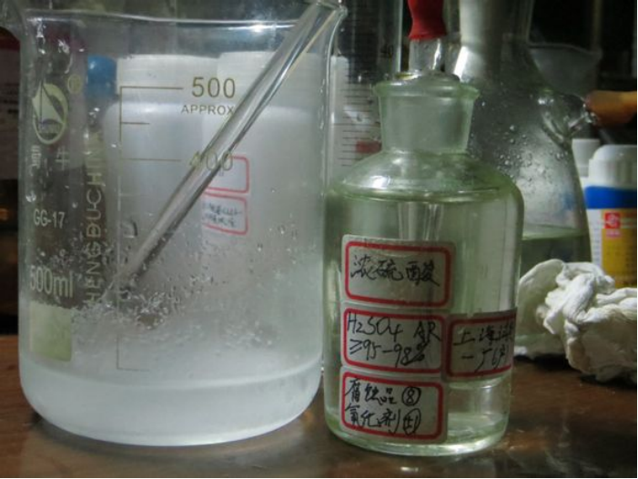 - 加入装有
机械搅拌器、恒压滴液漏斗和回流冷凝管的四口烧瓶中，烧瓶置于恒温水浴锅中。
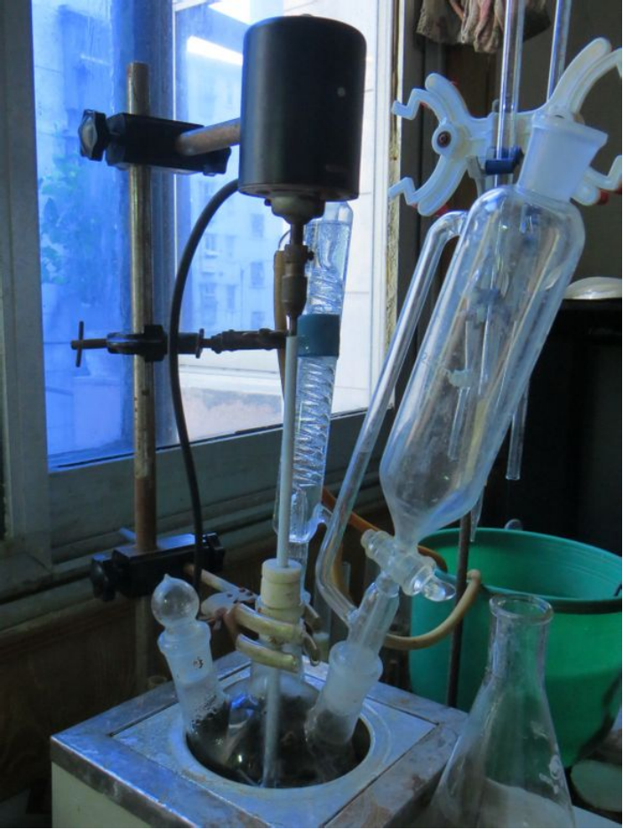 - 开启
水浴锅，设定温度为75℃。
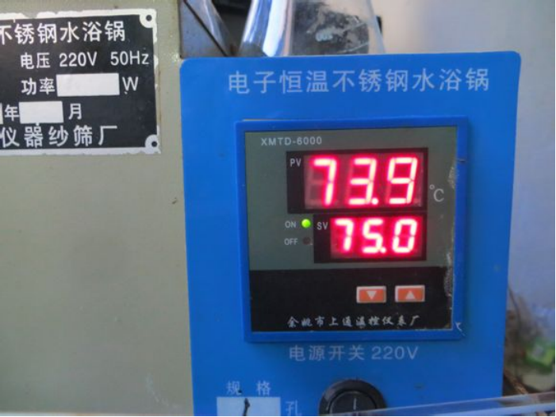 - 称取29.02g
乙二醛（aq.40％）加入恒压滴液漏斗中。
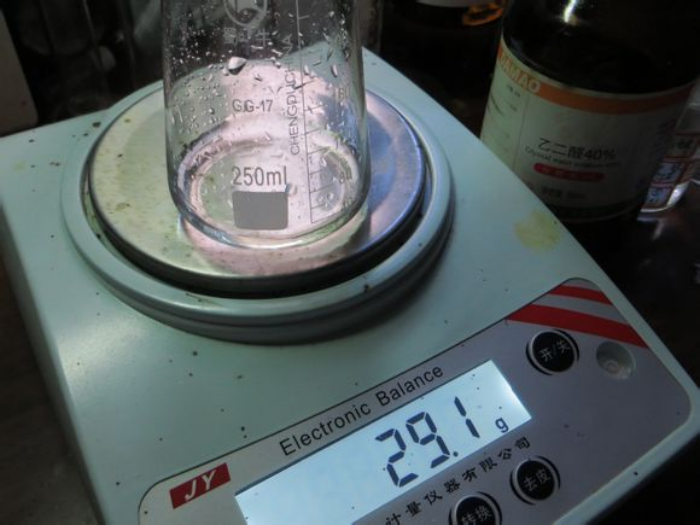 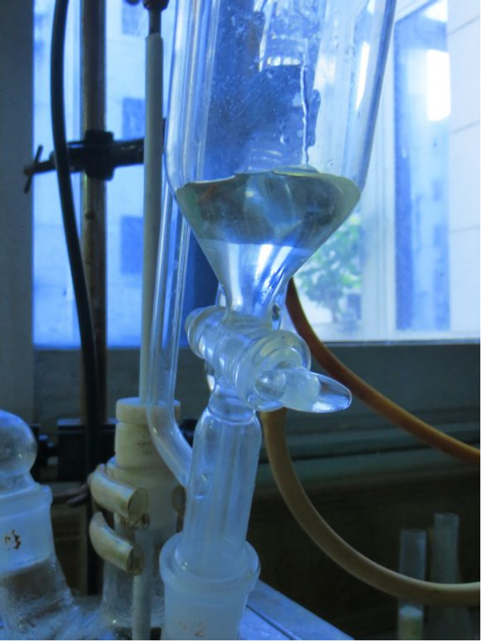 - 达到预定温度，打开
恒压滴液漏斗的活塞，控制其滴加速度。在5min左右滴加完毕。
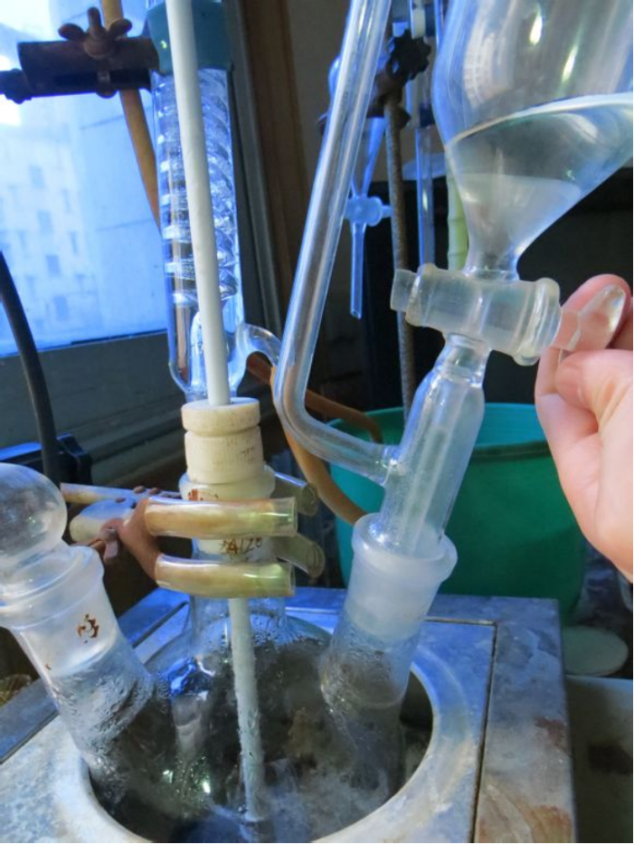 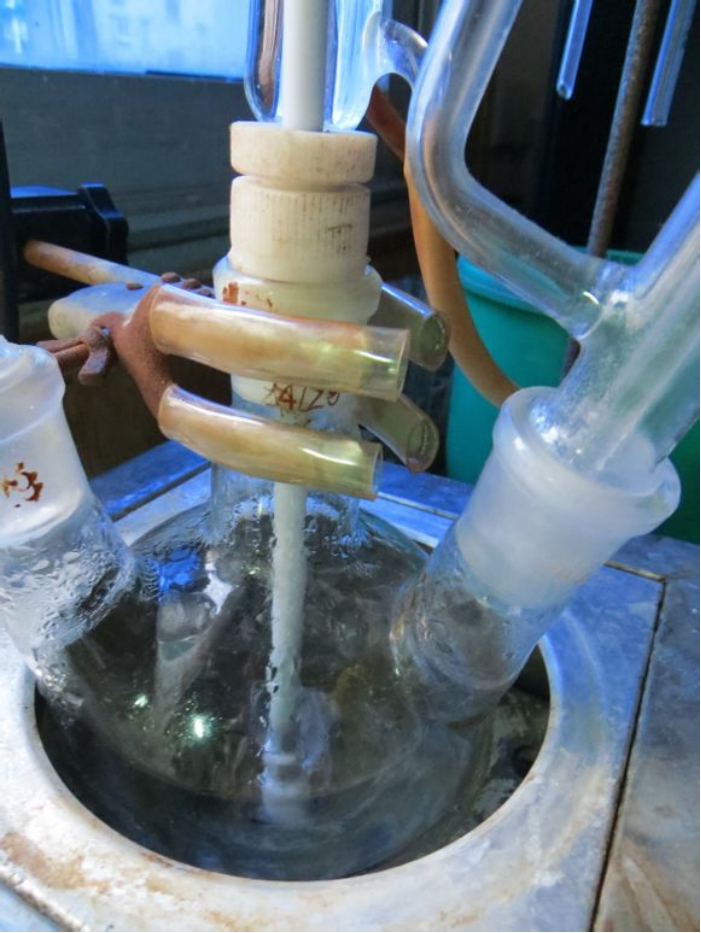 - 滴加完毕后溶液立即变白，随后恒温反应2h。 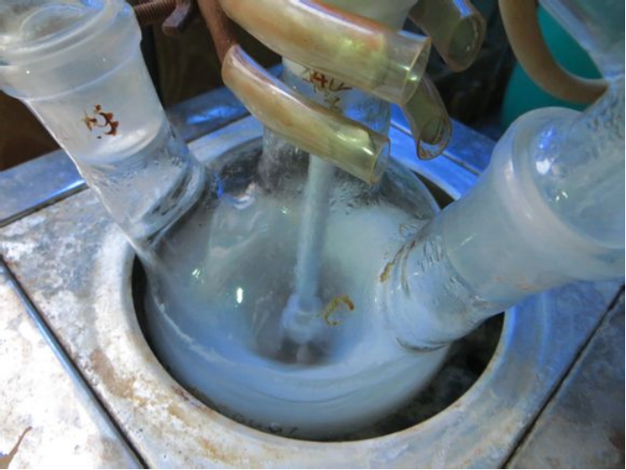 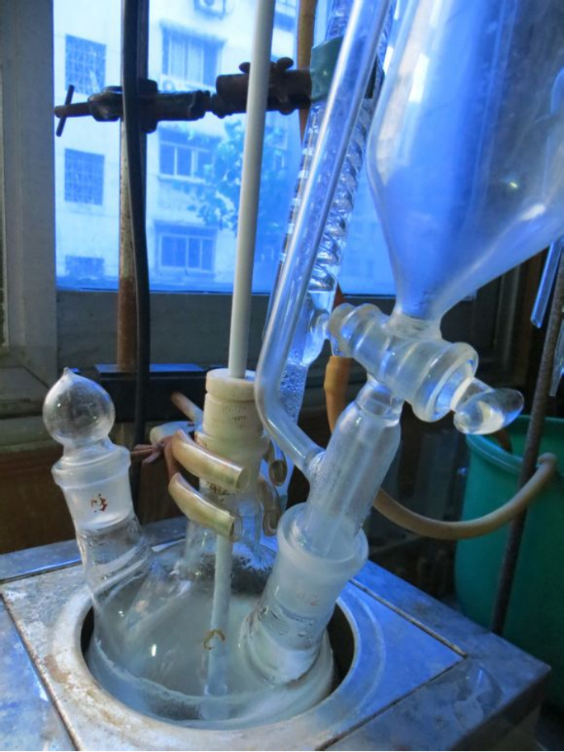 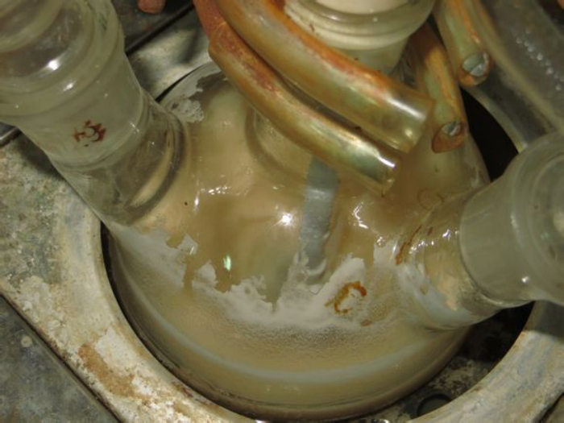 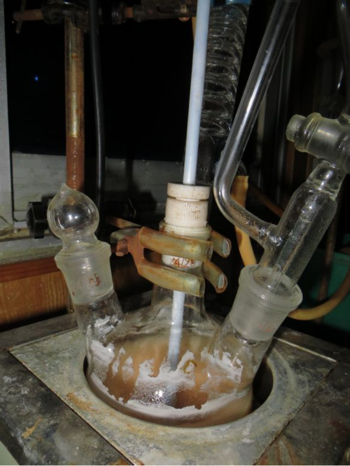 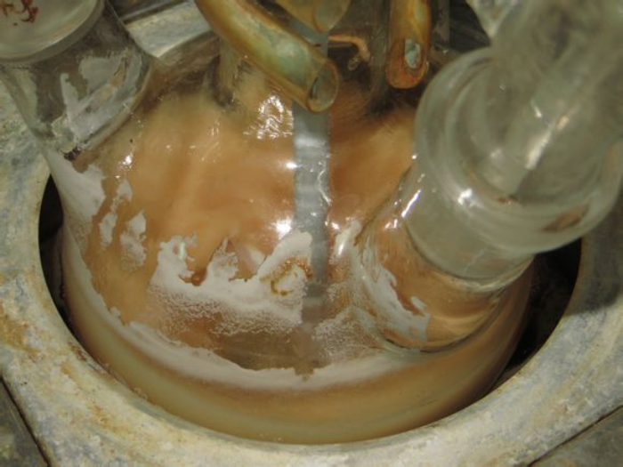
- 拆除装置，将反应液倾入
三角烧杯中。抽滤，并用水、乙醇、稀氢氧化钠水溶液洗涤。干燥，得到产物。
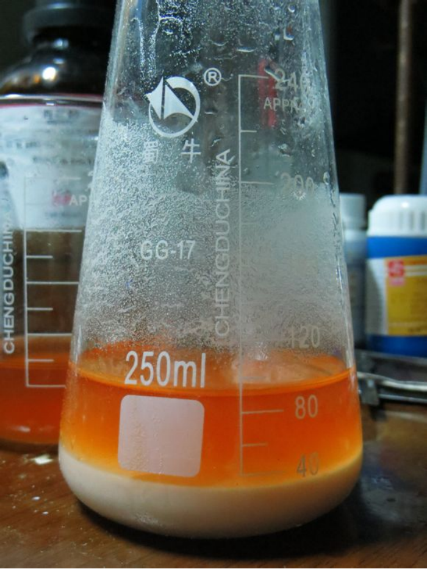
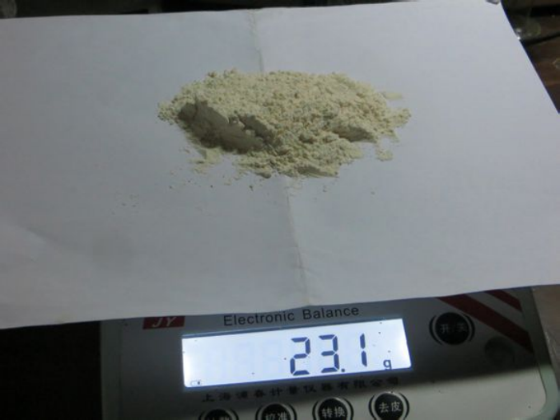 - 产率=(23.1g/71.058g)x100%=32.5%
备注
如果您遵循本指南的制作流程而发现问题或可以改进的流程，请提出 Issue 或 Pull request 。